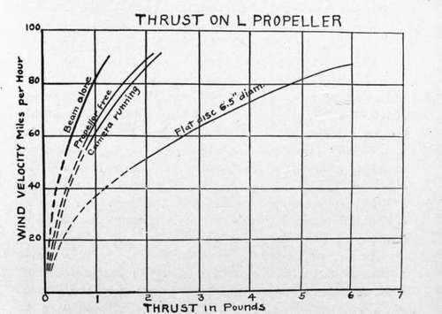
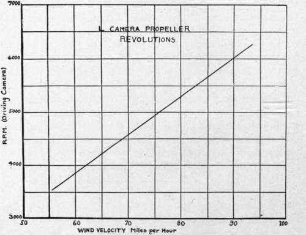

Performance And Efficiency Data
Description
This section is from the book "Airplane Photography", by Herbert E. Ives. Also available from Amazon: Airplane photography.
Performance And Efficiency Data
The first step in deciding upon methods of power drive, and indeed in deciding whether power drive is feasible at all, is to assemble definite data as to the power required to drive representative cameras. Approximate figures for some of the cameras described in previous chapters are:
These requirements—not exceeding 1/10 horse power—are insignificant in comparison with the total of 100 to 400 horse power available for all purposes from the plane's engine.
Propeller Characteristics
Data on the performance of small propellers are somewhat meagre. However, the results of the rather extensive researches on large ones, suitable for driving planes, may be applied, with proper reservations, to give a fair guide to the study of the application of small propellers for driving plane auxiliaries.
The first factor to be considered is the thrust or head resistance offered by a propeller to motion through the air. This varies as the square of the velocity, as the density of the medium, and as the area of the body projected normally to the wind, the formula being where T = thrust, d= density, a=area, V= velocity. Data on the L camera propeller are shown in Fig. 66, where its thrust both when free and when loaded with the camera is given, as well as that of a solid disc of the same diameter as the propeller. For this propeller, which is double-bladed, and six inches in diameter, cda = .000275 with the load on.
L camera, de Ram,. . "K" film.
26 watts, 60 watts, 30 watts.
T=cdaV%.
The total thrust amounts to only about three pounds when the plane velocity is 100 miles per hour. The head resistance of the whole plane is a matter of hundreds of pounds, so that the propeller resistance is quite negligible.
The next factor is the speed of revolution of the propeller, expressed in revolutions per minute. This varies with the design—the number of blades, their area, and pitch. For a given design the speed of revolution is directly proportional to the speed of motion through the air, and to the density of the air. Representative data for the L camera propeller are shown in Fig. 67. It will be noted that the speed goes up to 8000 for 120 miles per hour air speed. This illustrates the necessity for great strength to withstand centrifugal force. Propellers should be constructed of tough material, and subjected to whirling tests up to speeds considerably in excess of any the plane will attain in any maneuver. At low speeds the linear relationship fails, as a critical velocity is reached—about 3500 r. p. m. for this propeller—where it refuses to turn.
Fig. 66. - Wind propeller data.
The fact that the speed of the propeller depends on the density of the air has an interesting corollary, which is that a propeller adequate at low altitudes will fail at high ones. The density of the air varies with altitude according to the following figures:
Fig. 67. - Relation between air speed and propeller revolutions.
At 3000 meters,..............72 per cent, of sea level.
5000 meters,..............59 per cent, of sea level.
6000 meters,............. . 52 per cent, of sea level.
If we take the r. p. m. at 90 miles per hour at sea level as 6000, then at the above altitudes the speeds will be 4300, 3500, and 3000, respectively. The last figure is below that for which this size of propeller stalls with its normal load, as noted in the last paragraph. Consequently, if flying is to be done at these altitudes a larger propeller must be carried, which will still deliver enough power at the lower density.
The next factor to be considered is the power furnished by the propeller. As a representative figure may be quoted the performance of the L propeller. This gives 27 watts at 3600 revolutions per minute (56 miles per hour). From this figure the performance of other propellers may be deduced from the basic laws, which are: that the power varies as the density of the medium and as the cube of the velocity (assuming constant efficiency). Since the power delivered by the six inch diameter L propeller is already adequate at 60 miles per hour, the necessary dimension to function satisfactorily at 100 miles per hour would need to be only a little more than three inches, except for the desirability of a safety factor for high altitudes and low air densities.
The efficiency of the propeller is defined by the relation— t?ffi • _ power delivered by the propeller power supplied to the propeller.
The denominator of this fraction is the thrust times the velocity, for which the curves of Fig. 66 supply us data for the L propeller. Using the figures 3600 r. p. m., 56 miles per hour, and 27 watts, we find the efficiency to be about 50 per cent. This increases with the velocity, with a possible upper limit of 70 to 80 per cent. Since the main propeller of the plane is not over 80 per cent, efficient we have at most an efficiency of 64 per cent, in using a propeller drive, as compared with taking the power directly off the engine.
In considering the use of spring and clock-work motors we meet at once with the problem of comparing the effect on the performance of a plane of a carried weight, as against a head resistance. The efficiency of a spring motor is measured in terms of its weight, that of a propeller in terms of its head resistance. The general answer to this question is given by the relation that a pound of dead weight is equivalent to % pound head resistance.
In order to apply this relation to the study of spring motors for driving cameras, data are necessary on the power delivery per pound weight of such mechanisms. Such data are not easily accessible, largely because clock-work has not generally been seriously considered as a motive power for large apparatus. To arrive at an approximate figure we may take the fact that in an 8 X10 inch film camera designed by one of the manufacturers who have utilized clock-work, the motor weighed 30 pounds. This is equivalent to six pounds head resistance. Now the type K, 18 X24 centimeter film camera is operated, even with the addition of a friction drive speed control, by means of the L camera propeller. As shown in Fig. 66, at 100 miles per hour the head resistance of this propeller is still less than three pounds. Consequently, it appears that from the efficiency standpoint the clock mechanism is quite outclassed by the wind propeller.
Coming next to the electric motors, the L camera and the K are both operated satisfactorily with a J^o horse power motor, weighing 6 pounds. For the deRam a o horse power motor has been adopted.
Taking up efficiency considerations, we have, if the current is supplied by a generator from the engine, a transformation factor of 70 to 80 per cent, from mechanical to electrical energy and a similar factor in using a motor for the camera. When batteries are employed the matter of weight versus head resistance again arises. The batteries found most satisfactory for operating the K and deRam cameras are of the six-cell 12 volt lead type. Their capacity is 40 ampère hours at three amperes or 36 at five amperes—more than is necessary for a single reconnaissance, but a practical figure when economy of charging and replacement are considered. The weight of this unit is 27 pounds. To this must be added the weight of the motor—6 lbs.—making a total of 33 pounds, equivalent to a head resistance of nearly 7 pounds. This is more than twice the propeller head resistance invoked to do the same work.
These considerations of efficiency have been gone into because they are usual in studying any engineering problem and because of the insistent demand from the plane designer that every ounce of weight and head resistance be saved. Actually, as already stated, the load imposed by any method of power drive is trivial in comparison with the whole load of the plane. There is, however, an important reservation to be made, which applies against clock-work and batteries: This is, that while the equivalent head resistance of any camera motive power carried as dead weight is small, its effect on balance may not be so. While the use of a propeller need not disturb the plane's balance, the weight of the camera alone, without any driving apparatus, is already seriously objected to on this score. The merely mechanical superiority of the propeller as a source of motive power is on the whole rather marked.
Continue to:
Tags
camera, lens, airplane, aerial, film, exposure, photography, maps, birdseye